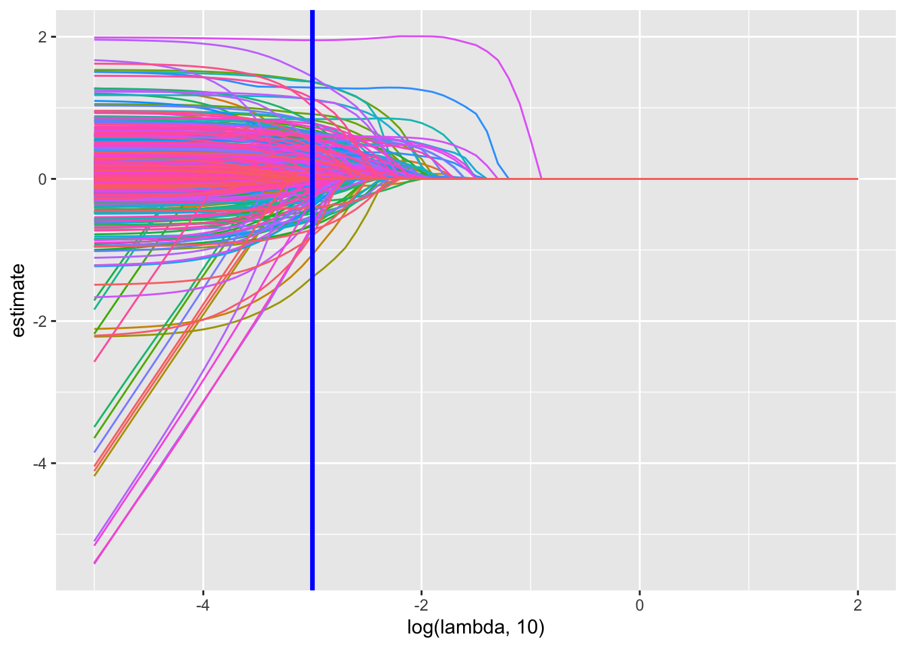
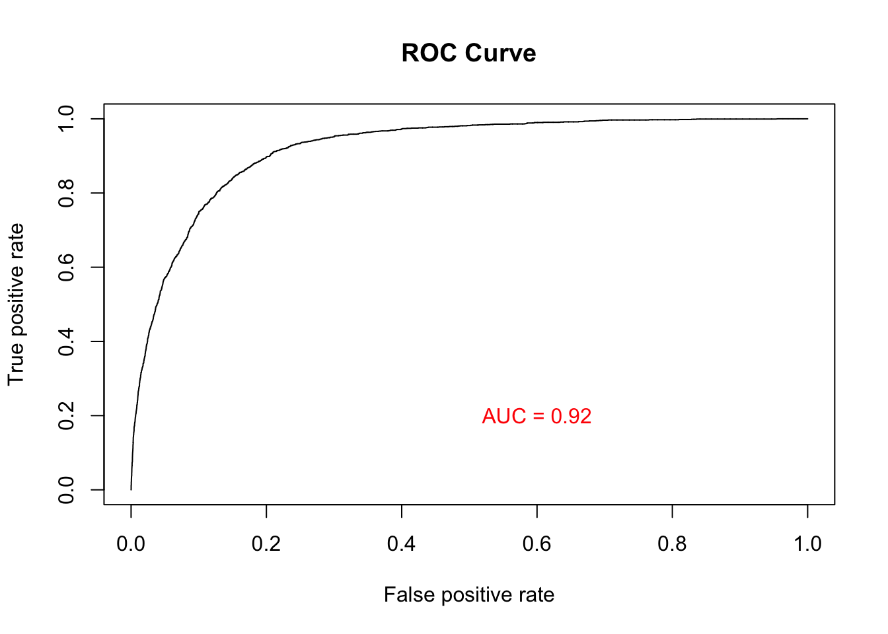

df = read.csv("DATA/games.csv")|>
janitor::clean_names()|>
subset(select = -c(dlc_count, about_the_game, reviews, header_image, website, support_url, support_email, metacritic_score, metacritic_url, notes, developers, publishers, screenshots, movies, score_rank, average_playtime_two_weeks, median_playtime_two_weeks, average_playtime_forever, peak_ccu, full_audio_languages))|>
subset(price > 0)
#Change the format of release date.
df = df|>
mutate(release_date = as.Date(release_date, format = "%b %d, %Y"))Since it is hard for models to directly analyze keywords as string, we one-hot encoded categories, genres, and tags, which facilitate models to analyze the dataset.
During our data preprocessing phase, we identified certain tags that had the potential to introduce data leakage into our dataset. These tags, listed below, were deemed inappropriate for inclusion due to their subjective and conclusive nature, making them difficult for a game producer to ascertain accurately: Masterpiece, Great Soundtrack, Addictive, benchmark, classic. By excluding these tags from our dataset, we could provide a model that help game makers to determine the game’s potential popularity.
df_concat = df|>
mutate(keywords = paste(df$categories, df$genres, df$tags, sep = ","))|>
subset(select = -c(categories, genres, tags))keywords_df = df_concat|>
subset(select = c(app_id, keywords))|>
separate_rows(keywords, sep = ",")|>
distinct(app_id, keywords, .keep_all = TRUE)|>
mutate(value = 1)|>
subset(keywords != "")|>
pivot_wider(names_from = keywords, values_from = value, values_fill = 0)
one_hot_encoded_df = left_join(df_concat, keywords_df, by = "app_id")
popular_encoded_df = one_hot_encoded_df|>
subset((positive+negative) > 10)|>
subset(positive/(positive+negative) > 0.7)|>
subset(estimated_owners != "0 - 20000")|>
subset(median_playtime_forever > 120)|>
mutate(popular = 1)
unpopular_encoded_df = anti_join(one_hot_encoded_df, popular_encoded_df, by="app_id")|>
mutate(popular = 0)
encoded_with_label_df = rbind(popular_encoded_df, unpopular_encoded_df)|>
janitor::clean_names()|>
subset(select = -c(positive, negative, median_playtime_forever, estimated_owners, recommendations, user_score, supported_languages, keywords, addictive, masterpiece, great_soundtrack, benchmark, classic))|>
mutate(windows = as.integer(as.logical(windows)))|>
mutate(mac = as.integer(as.logical(mac)))|>
mutate(linux = as.integer(as.logical(linux)))
dataset_without_id_name = encoded_with_label_df|>
subset(select = -c(app_id, name, release_date))|>
drop_na()There are some redundant feature in our dataset, we might want to find those variables and remove some of them.
#this function could help us find tags that be potential subset of other tags. By getting the dot product of two on-hot encoded vector and compare its sum with current column's sum, if they are equal and larger than 0, they could be possible related tags.
find_col_pairs = function(df) {
n = ncol(df)
result = character(0)
for (i in 1:(n-1)) {
for (j in (i+1):n) {
col_i = df[, i]
col_j = df[, j]
dot_product = sum(col_i * col_j)
col_i_sum = sum(col_i)
col_j_sum = sum(col_j)
if (col_i_sum == dot_product & dot_product != 0 & col_i_sum != 0) {
result = c(result, paste(colnames(df)[i], colnames(df)[j], sep = "-"))
}
if (col_j_sum == dot_product & dot_product != 0 & col_j_sum != 0) {
result = c(result, paste(colnames(df)[j], colnames(df)[i], sep = "-"))
}
}
}
return(result)
}
subgroup_features = find_col_pairs(dataset_without_id_name)From the result, most feature are sub-group of windows which is expected since most games are on windows system. We decide to remove this features since it is not informative to our model. We also found tags batman, fox, birds, football_american, tile_matching, tracked_motion_controller_supportonly present once, coding only appears twice, to make our model more generalizable, we decide to drop these columns.
We identified redundant features such as ‘Multi_player’ and ‘multiplayer,’ as well as ‘Single_player’ and ‘singleplayer.’ Although they are not completely collinear, it was evident that they provided similar information. To enhance model interpretability, we decided to remove one of each redundant pair.
dataset_without_id_name = dataset_without_id_name|>
subset(select = -c(windows, multiplayer, birds, football_american, fox, batman, coding, tile_matching,tracked_motion_controller_support, singleplayer))Here, we choose lasso regression since it could perform feature selection. We uses 5 fold-cv for lambda selecting. We first separate test set and train set to prevent possible data leakage.
#first, we split target and tags, then we split train and test datasets
dataset_without_id_name= dataset_without_id_name[sample(1:nrow(dataset_without_id_name)), ]
dataset_without_id_name$id = 1:nrow(dataset_without_id_name)
train = dataset_without_id_name |>
sample_frac(0.70)
test = anti_join(dataset_without_id_name, train, by = 'id')
train = train|>
subset(select = -c(id))
test = test|>
subset(select = -c(id))
train_x = train|>
subset(select = -c(popular))
train_y = train|>
pull(popular)
test_x = test|>
subset(select = -c(popular))
test_y = test|>
pull(popular)
set.seed(1234)
foldid = sample(1:5, size = nrow(train_x), replace = TRUE)
lambda = 10^(seq(2, -5, -0.1))
lasso_fit = glmnet(
x = as.matrix(train_x),
y = train_y,
lambda = lambda,
alpha=1,
family = "binomial"
)
lasso_cv = cv.glmnet(
x = as.matrix(train_x),
y = train_y,
lambda = lambda,
foldid = foldid,
alpha=1,
family = "binomial"
)
lambda_opt = lasso_cv$lambda.minbroom::tidy(lasso_fit) |>
select(term, lambda, estimate) |>
complete(term, lambda, fill = list(estimate = 0) ) |>
filter(term != "(Intercept)") |>
ggplot(aes(x = log(lambda, 10), y = estimate, group = term, color = term)) +
geom_path() +
geom_vline(xintercept = log(lambda_opt, 10), color = "blue", size = 1.2) +
theme(legend.position = "none")
This plot shows the best selection of lambda.
result = predict(lasso_fit, s = lambda_opt, newx = as.matrix(test_x), type = 'response')prediction_obj = prediction(result, test_y)
performance_obj = performance(prediction_obj, "tpr", "fpr")
auc_value = performance(prediction_obj, "auc")@y.values[[1]]
plot(performance_obj, main = "ROC Curve")
text(0.6, 0.2, paste("AUC =", round(auc_value, 2)), col = "red")
result = as.data.frame(result)|>
mutate(prediction = ifelse(s1 > 0.5, 1, 0))|>
mutate(actual = test_y)|>
mutate(difference = ifelse(prediction != actual, 1, 0))
acc = (nrow(result) - sum(pull(result, difference)))/nrow(result)
result = result|>
mutate(actual = factor(actual, levels = c(1, 0)))|>
mutate(prediction = factor(prediction, levels = c(1, 0)))
confusionMatrix(data=pull(result, prediction), reference = pull(result, actual))## Confusion Matrix and Statistics
##
## Reference
## Prediction 1 0
## 1 544 319
## 0 1052 17173
##
## Accuracy : 0.9282
## 95% CI : (0.9244, 0.9318)
## No Information Rate : 0.9164
## P-Value [Acc > NIR] : 9.877e-10
##
## Kappa : 0.4077
##
## Mcnemar's Test P-Value : < 2.2e-16
##
## Sensitivity : 0.34085
## Specificity : 0.98176
## Pos Pred Value : 0.63036
## Neg Pred Value : 0.94228
## Prevalence : 0.08361
## Detection Rate : 0.02850
## Detection Prevalence : 0.04521
## Balanced Accuracy : 0.66131
##
## 'Positive' Class : 1
## Upon examining the confusion matrix, it becomes evident that our model struggles to correctly classify a substantial number of popular games. However, a noteworthy observation is that the rate of false positives is within an acceptable range. This observation suggests that there may be discernible patterns among unpopular games that our model can capture effectively. As a result, this model holds promise in providing valuable insights for identifying games that are less likely to achieve popularity.
Furthermore, our analysis reveals that the model’s performance, as indicated by the p-value, is statistically significant compared to the scenario of having no information. This suggests that our model does contain valuable information that contributes to its predictive capabilities. The significance of the p-value underscores the utility of the model in making informed predictions and decisions.
It is important to note that the model’s sensitivity, particularly in recognizing popular games, is relatively low. One plausible explanation for this discrepancy in sensitivity may stem from the imbalanced ratio of popular games to unpopular games within the dataset. The skewed distribution of popular and unpopular games can pose challenges for the model in learning generalized patterns for popular games, leading to reduced sensitivity. It might be useful to perform a down-sampling, but it is unsure whether such down-sampling will cause information loss.